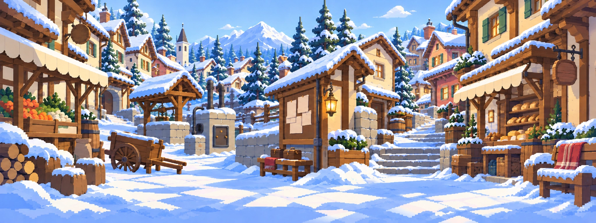
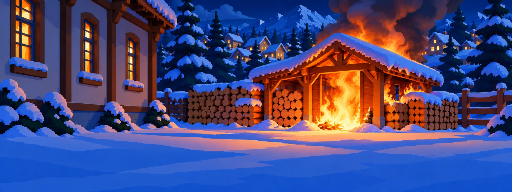
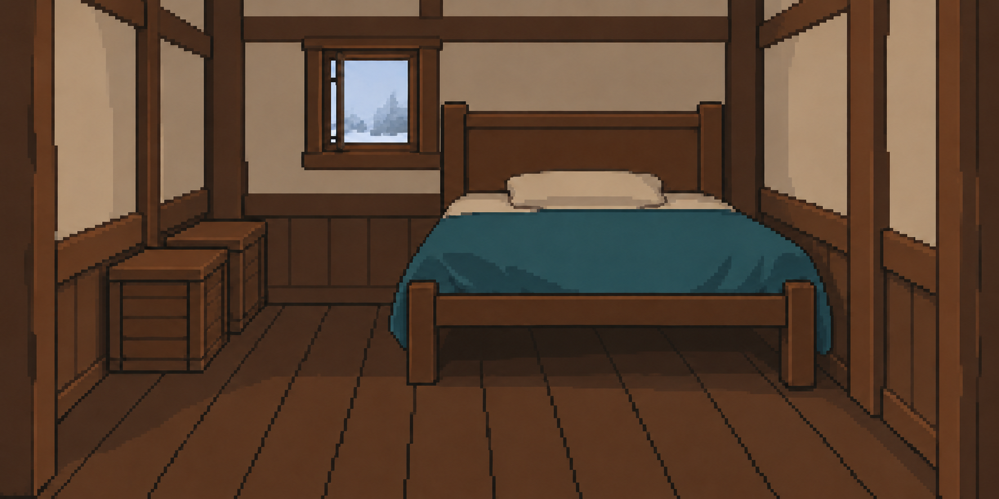
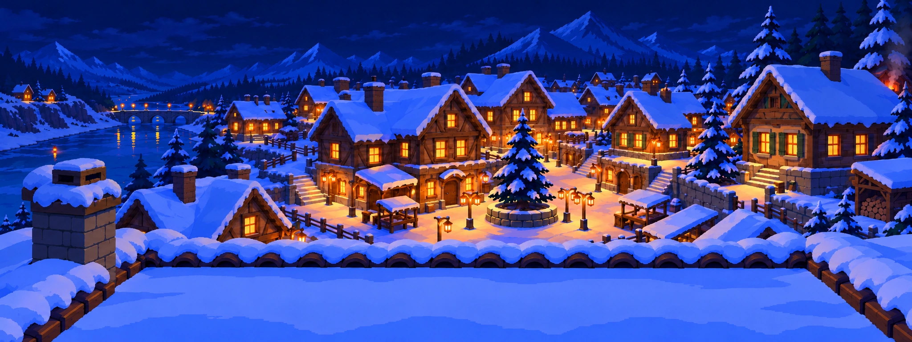
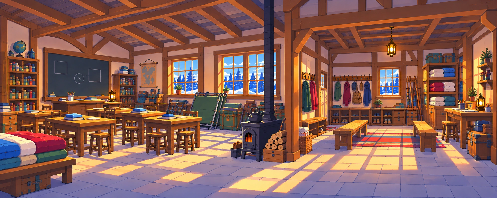
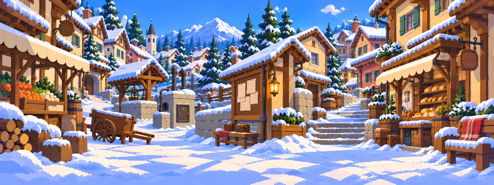
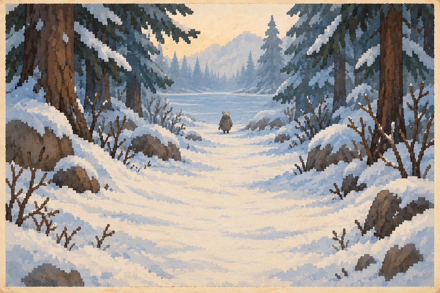

이야기의 갈림길
1회차가 끝났다 / 갈라질 수 있었던 때
1회차 · 14일 아침
2일 저녁식당 문 닫을 때

3번 등 앞
꺼진 등
?아직 못 본 길
6일 저녁창고 점호

장작 창고
타 버린 창고
?아직 못 본 길
7일 밤서류를 펼칠 때

13호
닫힌 문
?아직 못 본 길
?아직 못 본 길
11일 밤아랫길 출발

아랫길
끊긴 등불
?아직 못 본 길
12일 낮첫 그릇

학교 배식
작은 냄비
?아직 못 본 길
?아직 못 본 길
13일기록을 읽을 때

광장
올라간 주먹
?아직 못 본 길
14일결말

얼어붙은 마을
다섯 중 넷을 잃음
?다른 결말 5
···이름 없는 아침